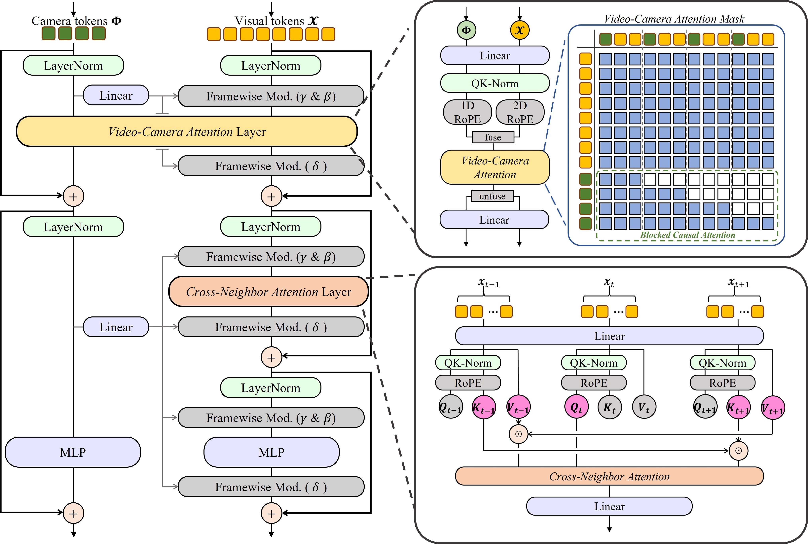

Overview of VicaSplat. The model employs a transformer encoder to convert video frames into visual tokens, while a custom transformer decoder with learnable camera tokens processes these representations. Several dedicated prediction heads then predict camera poses and 3D Gaussian splats respectively.
Architecture of one block in VicaSplat decoder. Both camera tokens and visual tokens are fed into the block. They firstly fully interact with each other within a Video-Camera Attention layer. Then the visual tokens go through an additional Cross-Neighbor Attention layer to enhance the view-consistency. Moreover, we utilize the differentiated camera tokens to further inject the complex view-dependent features into visual tokens via Framewise Modulation.

@article{li2025vicasplat,
title = {VicaSplat: A Single Run is All You Need for 3D Gaussian Splatting and Camera Estimation from Unposed Video Frames},
author = {Zhiqi Li and Chengrui Dong and Yiming Chen and Zhangchi Huang and Peidong Liu},
journal = {arXiv preprint arXiv:xxxx.xxxxx},
year = {2025}
}